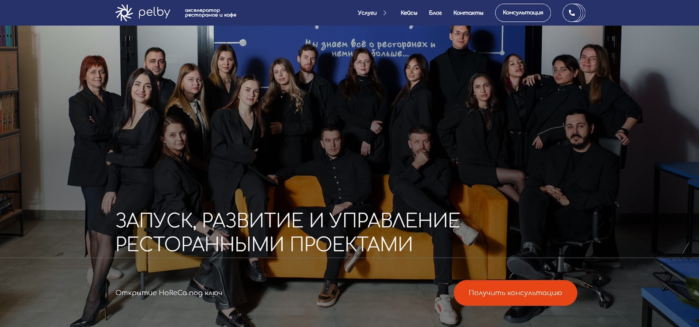
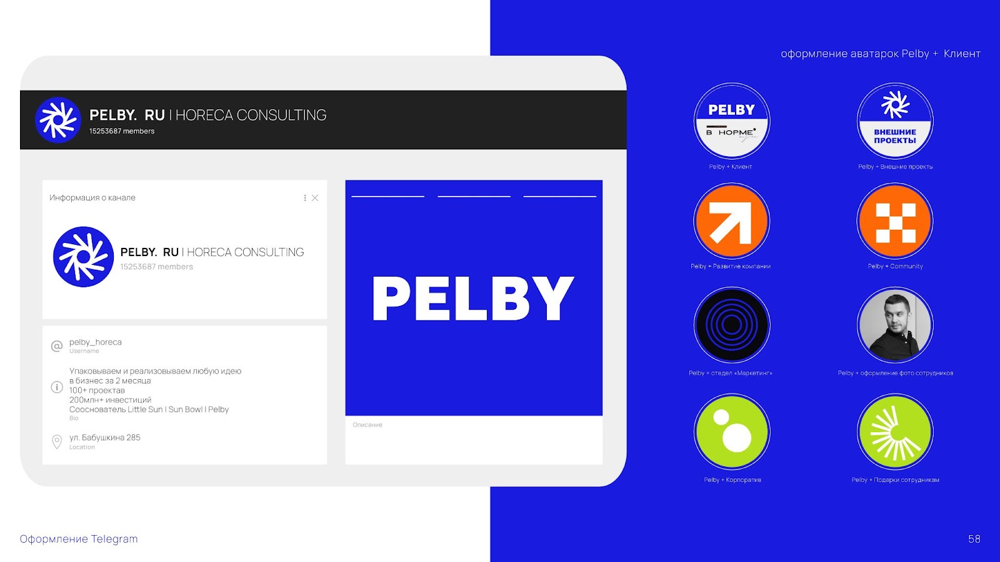
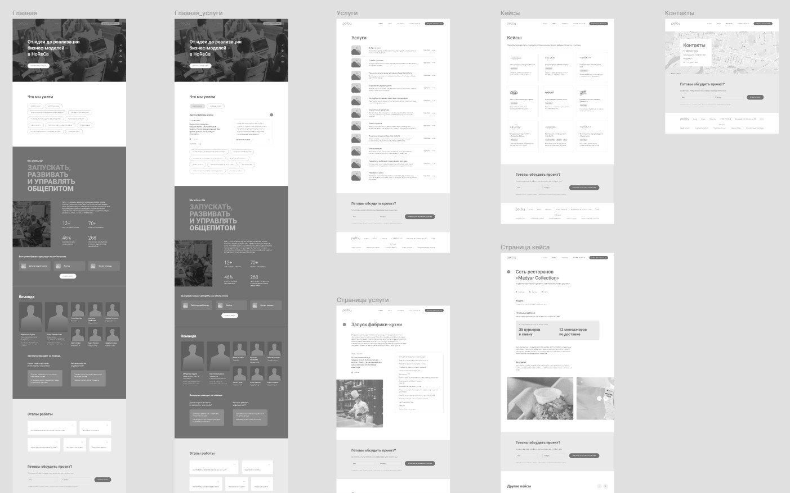
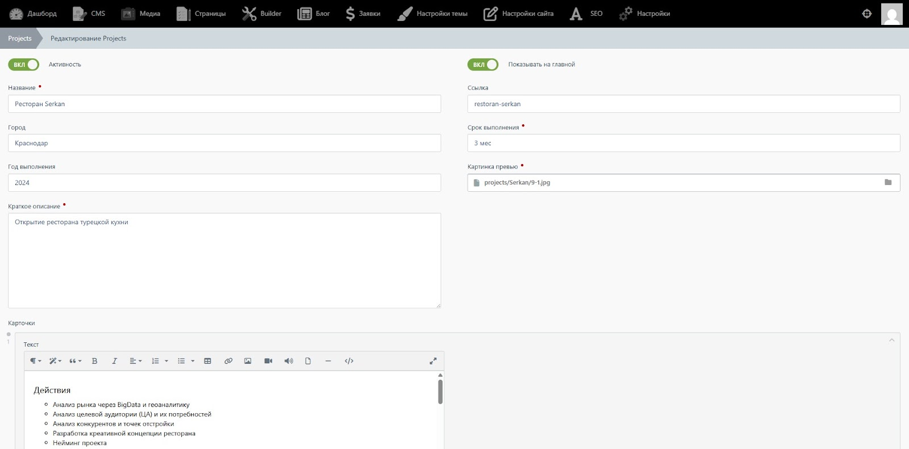
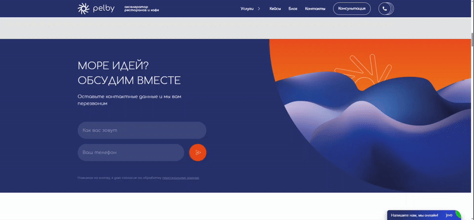
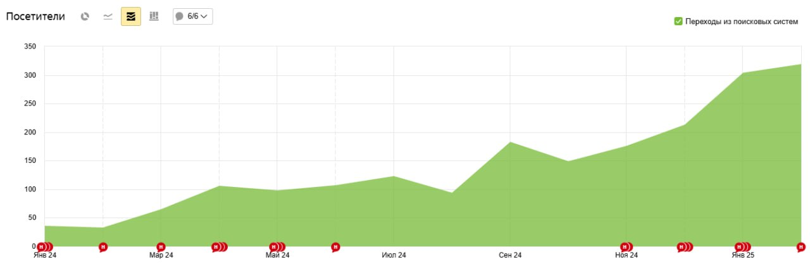

О проекте
Задача
Разработать корпоративный сайт для акселератора ресторанов и кафе Pelby.
Клиент
Pelby — команда, которая знает всё про ресторанный бизнес. Они помогают запускать заведения, развивать их и делать прибыльными. Брендинг, маркетинг, подбор оборудования, найм персонала — их специалисты закрывают весь цикл задач.

Цель проекта
Создать удобный, логично структурированный и визуально сильный сайт, который поможет потенциальным клиентам легко находить Pelby и быстро понимать, чем им здесь могут помочь. Нужно было оцифровать услуги, структурировать кейсы и сделать так, чтобы ресурс выглядел свежо, актуально и говорил с аудиторией на одном языке. Плюс — поддержать фирменный стиль компании.

С чего начали
Когда нет жесткого ТЗ, но есть четкое понимание цели, это дает свободу для классных решений. Мы взяли брендбук Pelby, изучили конкурентов, посмотрели аналитику старого сайта и включили в процесс самих клиентов компании.
Каст-дев стал основой работы: мы собрали фокус-группу из реальных клиентов Pelby, показали им прототип, получили фидбэк и доработали проект так, чтобы всё было максимально понятно и удобно.

Что сделали?
- Продумали главную страницу: она даёт исчерпывающее представление о Pelby, но при этом легко воспринимается. Чёткие смысловые блоки без перегрузки.
-
Оцифровали услуги и кейсы: логично структурировали, визуально разбили, добавили интерактивные элементы. Никаких длинных простыней текста — всё динамично и понятно.
-
Геометрия, графика, абстракция c элементами фирменного стиля, в меру анимаций — получился современный и функциональный интерфейс.
-
Протестировали кликабельный макет дизайна на финальном каст-деве с клиентами Pelby и доработали детали.
Хотя сайт включает всего четыре раздела (главная, услуги, кейсы, блог), каждый из них — это не просто список пунктов в меню, а продуманное взаимодействие пользователя с контентом. Мы сделали акцент на визуальной подаче и логичном разделении смыслов.
Разработка
В основе сайта — Winter CMS. У Pelby много проектов, знаний и кейсов, а значит, сайт будет постоянно обновляться. Мы сделали так, чтобы контент-менеджеры могли легко редактировать контент на страницах, добавлять изображения, структурировать материалы — всё просто, понятно и не требует технических навыков. Обновлять сайт так же легко, как и читать его.

Фронтенд адаптировали под сложный макет, уделяя особое внимание интерактивным элементам и отзывчивости на разных устройствах. И очень быстро получили опыт, которым делимся с вами: тестируйте сложные макеты на всех разрешениях Safari! Мы столкнулись с нюансами адаптации, но вовремя их подловили. Теперь это правило номер один при разработке нетипичных фронтов.

Что было сложным?
Когда мы разрабатывали прототип и макет, контента по кейсам не было совсем. Это была большая проблема, но мы, как всегда, превратили проблему в возможность — и придумали визуально интересные решения для подачи информации. Так родилась продуманная структура страниц с кейсами, где каждая деталь работает на восприятие. В дальнейшем Pelby подготовили боевой контент под готовую структуру, — и всё идеально встало на свои места.
Результат
Сайт Pelby стал не просто визиткой, а полноценным инструментом, который привлекает клиентов и помогает компании показывать свою экспертность.
С момента запуска трафик на сайте растёт. На графике ниже видно, как с января 2024 года показатели увеличились в несколько раз — и это только начало. Мы продолжаем развивать платформу, ведём блог, анализируем трафик и корректируем стратегию продвижения.

От стратегии и маркетинга до оборудования и автоматизации — команда Pelby понимает индустрию изнутри и помогает ресторанам не просто запускаться и работать, а делать это эффективно. Именно эту идею мы заложили в сайт: он отражает масштаб их экспертизы, показывает реальные кейсы и даёт клиентам полное понимание, с кем они имеют дело. Теперь найти Pelby и доверить им свой бизнес стало еще проще.
Вывод
Создать сайт просто. А сделать его действительно удобным и запоминающимся — уже задача со звездочкой! Мы справились, и у Pelby теперь именно такой сайт. Если вам тоже нужен крутой проект — будем рады помочь.
И заглядывайте в другие наши кейсы — там тоже есть, чем вдохновиться :)